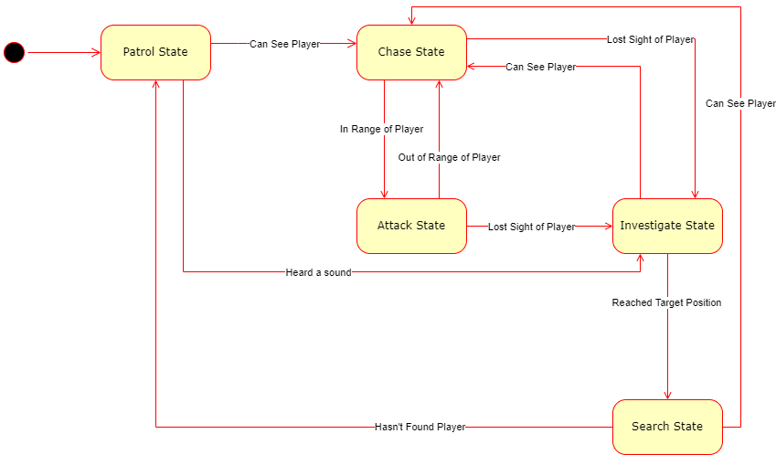

I am a Junior Games Programmer currently employeed. I have a particular interest in artificial intelligence. In my spare time I like to play video games with my friends and if I want to relax on my own, I might play some single player games such as Pokemon or Horizon Forbidden West. And outside of gaming, I enjoy playing Volleyball and Handball and I also have a curiosity in Psychology.
This engine was made during my second year at university. For the graphics side, I made use of shaders to create lighting and to create the movement of the waves. To create the boat I used an OBJ loader and applied a texture onto the obj. This is a massive improvement from the OpenGL engine I made in my first year and I'm especially happy with my use of a shader file. Shaders were a nw concept going into my 2nd year and therefore I had to do a lot of outside research so that I could use them effectively in my new engine.
The physics side was created in the second half of my 2nd year. This involved simulating real world physics in the graphics engine that was made in the first half of the year. The physics implmented include gravity, bouyancy, torque and rotation.
The AI uses the A* algorithm with waypoints to navigate through the level and this is handled in the Pathfinding class. Firstly, all the walkable tiles are taken in a waypoints and converted into waypoint nodes. When the SetPath function is called, the start and end waypoint node is passed in and a vector of nodes is produced with the necessary waypoint nodes to traverse for the path.
The AI perception is done using a CanSee and CanHear function. The CanSee function checks to see if the player position is within the vision range and return true if that is the case. The CanHear funciton is a lambda function that is called whenever the SoundPlayed event occurs. It gets all the emitters in range that are playing and return the position of the closest one. The AI will then investigate this position.
The AI uses a Finite State Machine detailed in the State Class. The FSM is implemented using a base state class and the different states are inheritted. The different states are:
These are setup so that the state machine can be built for any enemy but can also call the specific functions for each state. Each state has a enter, update and exit function. The enter and exit functions are called once on first switching to the state and upon switching out of the state. These functions are used for switching sprite to the relevant look for the state and to setting a path before traversing this path in the patrol state. This is the AI State Machine Diagram.

All the enemies inherit from the CAIController class which acts as the base class for the AI behaviour. This class handles the movement of the enemies and the view semi circle. It also handles the interaction with the pathfinding class the holds virtual functions to be overriden in the inheritted classes. There are 3 types of enemies that inherited from CAIController:
The AlarmEnemy is an enemy that will alert nearby enemies by playing the bell it is holding to make a sound if it sees the player. The nearby enemies will then head to the location of the bell sound. This enemy does not attack the player and is meant to punish the player if they are caught by it.
The DogEnemy will attack the player using a dash. This works by using 2 timers, one for the attack and one for the cooldown. The dash is emulated by increasing the speed of the dog for a small period of time and the dog will dash in a straight line towards the player. The indication of when the dog is about to attack is done by slowing the dog drastically for a brief period of time before dashing.
The GruntEnemy holds a weapon and it will use the weapon if it gets within the weapon's range of the player. This works for both melee and ranged weapons.
This library can be used to create CNNs for regression and classification. It consists of a connected layer class, a convolutional layer class, a pooling layer class and a network class. A link to the project can be found here:
As part of my placement year, my 3rd year at University, I worked for Airbus Helicopters as a software programmer. For me this was a new experience as my first time working in full time job and as my first time working and living abroad. I have learnt a lot whilst working at Airbus and worked on a few projects that were very interesting to me:
This project required a dataset of images/videos of a selection of objects in a scene for a neural network on object detection. The dataset needed was not available open source or was not easy to collect naturally so the dataset needed to be produced synthetically. In order to do this, I used Unigine which is an engine used by Airbus Helicopters for the simulation of the helicopters. I had to consider the different possible scenarios in which these objects may appear in the real world. My part of this project was to provide a way for the user to add/remove/modify weather conditions to the scene in real time.
I created 2 classes for this: a UserInterface class and a Weather class. The user interface class set up the GUI for the user to add/remove/modify weather nodes. To add weather nodes to the scene, an add weather button is present and once clicked will open a file dialog in which the user can select a node to be added to the scene. Once a node is choosen, the node parameters window is shown to modify the parameters of the weather node for use to show different weather conditions. The node parameters window is created using an external xml to define the text boxes and buttons to produce a custom GUI. I created a combo box for the user to selected any of the nodes present in the scene to be modified or deleted. If a node is selected and the edit button is clicked then the node parameters window is shown and once confirmed, the parameters of the selected node are updated. If a node is selected and the delete button is clicked then the node is remove from the scene and removed from the combo box. The Weather class handled the adding, removing and editting of weather nodes. The weather nodes used the node parameters window of the UserInterface class to set and modify parameters such as position, scale, spawn rate and number of particles per spawn.
Skills I learnt whilst working on this project:
Another project I worked on was the creation and implementation of a neural network library in C code. It was a project that was started by my mentor and my job was to build upon it and automate a pipeline to convert models trained using Tensorflow into C code. Firstly, I had to add more activation functions to the library and then add unit testing to check that every aspect of the library worked as intended. Then the next step was to automate the process of creating and training a library using Tensorflow, converting that model using jinja into C code and finally unit testing the created model with the library.
In order to do all of this, I had to understand every part of the pipeline that was started by my mentor. This meant that I had to learn C code to understand the library, learn python and tensorflow for the creation of the model and learn how to automate this process in a Linux environment. On top of this, I learnt how to automate the process using git and jenkins so that a trained model can be exported. An integral part of the automation was to build and unit test the code using CMake and makefiles. Also, I learnt how to create documentation on the code using both doxygen and sphinx.
Skills I learnt whilst working on this project:
I worked on a different project that needed a development environment to be created and reproduced so that the software developers can all be working in the same environment. The environemnt needed to be set up in a way that can be used for a variety of projects. In order to do this we used packer, vagrant and ansible to create the virtual machine to be used by the developers. Packer was used to create a basebox file which has the debian iso and a very basic configuration for the virtual machine. This basebox file is then invoked by vagrant to build the virtual box and ansible is used to install the software onto that virtual box.
My job was to work on the vagrant and ansible side on this project. Vagrant is written in Ruby and is used to invoked the ansible playbook and to pass in the variables that will be needed. For example, the users' details are needed to set up the proxy on the virtual machine. The ansible playbook works on installing the software needed such as the IDE, proxy and pip modules.
Skills I learnt whilst working on this project:
Grade: A
Grade: C
Grade: C
Grade: A*
Grade: B
2 As, 5 Bs, 2 Cs